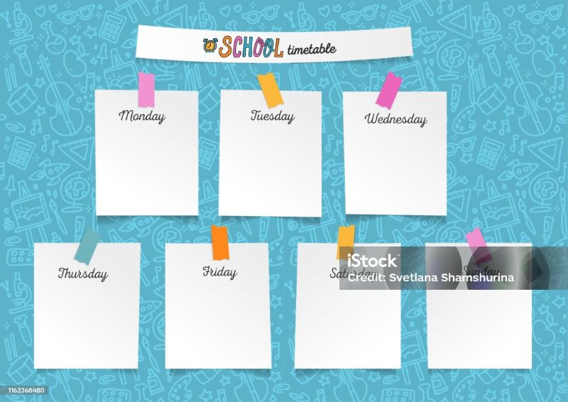

University of fake South Carolina ☯
USC Classroom
The classroom excels as a dynamic learning environment, seamlessly integrating modern teaching methods with a welcoming atmosphere. Equipped with advanced technology and comfortable furniture, it provides an ideal setting for interactive lessons. Vibrant educational visuals inspire curiosity, fostering a stimulating learning ambiance. The teacher's passion and innovative approach make this classroom a perfect hub for academic growth and personal development.
Classroom overview
Official website
At the University of South Carolina, you can build a future from more than 350 degree options — more than any other school in the state. Find a major that fits your strengths and, more importantly, what you enjoy doing. For the fifth straight year, the University of South Carolina has set the bar in first-year student experience. See why U.S. News and World Report named USC the No. 1 in the nation. How do you get to be one of the nation’s top public research universities? Let’s start with the 15 colleges and schools where our students pursue their academic and professional ambitions.
Academic Calendar
| Year | 2025 | 2026 |
|---|---|---|
| Course schedule ☻ | no class | no class |
| Breaks ☺ | Yes | Yes |